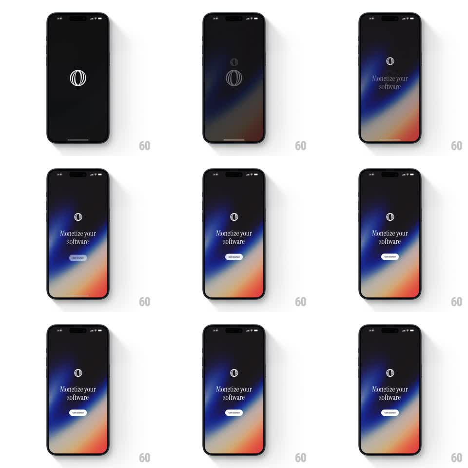

Media
Frame-by-frame

Rebuild this animation 1:1: Polar's splash intro - over a black screen, the globe logo de-blurs into focus, a grainy blue-to-orange gradient washes up from the bottom, the "Monetize your software" headline and a "Get Started" pill follow in a staggered de-blur sequence.

Rebuild this animation 1:1: Polar's splash intro - over a black screen, the globe logo de-blurs into focus, a grainy blue-to-orange gradient washes up from the bottom, the "Monetize your software" headline and a "Get Started" pill follow in a staggered de-blur sequence. ## Integration Integration: stack-agnostic spec - springs given as stiffness/damping, timed motions as duration + curve; map every value to your framework and animation library of choice. ## Scene Black screen. Center: the Polar globe mark (white outline sphere with vertical meridians). Lower half: a grainy atmospheric gradient - deep blue upper region dissolving into warm orange-red at the bottom edge. Serif headline "Monetize your software" sits below the logo, with a white "Get Started" pill button beneath. ## Motion spec Pattern: staggered de-blur reveal, ~2s. - Logo: the globe starts blurred (radius ~12px) and slightly scaled up (1.15), sharpening and settling to scale 1 over 700ms (ease-out). - Gradient: the blue-orange field rises from the bottom (translateY 30% -> 0, 900ms, ease-out) while cross-fading in, film grain shimmering continuously. - Headline: fades in blurred (radius 8px) and sharpens (600ms, +300ms delay after logo). - Button: "Get Started" de-blurs and fades in last (500ms, +500ms delay), scaling 0.94 -> 1. ## Calibration - Every element enters through blur, not a plain fade - the de-blur is the signature. - The gradient stays soft and out of focus; no hard horizon line. ## Reduced motion All elements appear with a single 300ms cross-fade; gradient static. ## Don't miss - The grain texture is visible and alive, not a flat smooth gradient. - The logo is a thin-line globe - meridian curves, not a solid circle.